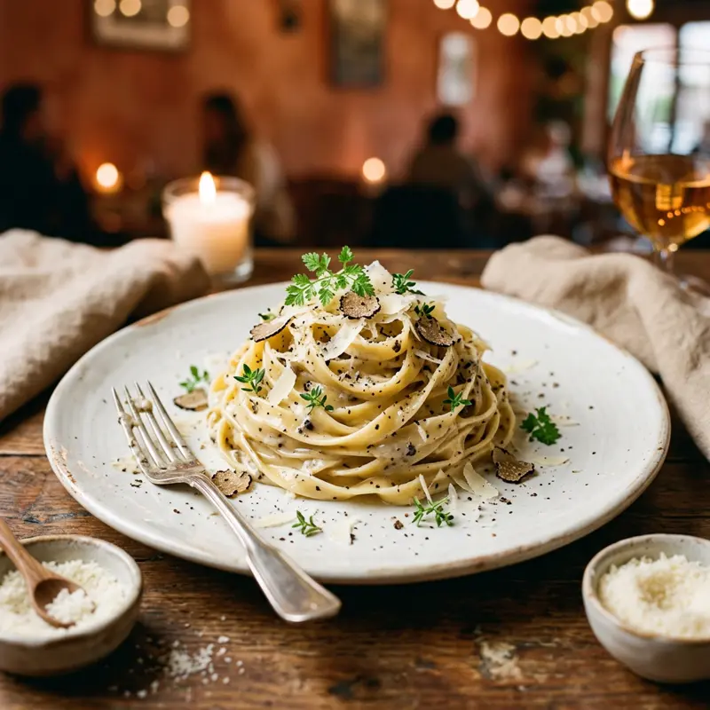

대만의 파스타 식당은 크게 두 갈래입니다. 학생·직장인을 겨냥한 저렴한 캐주얼 파스타 전문점, 그리고 정통 이탈리안을 표방하는 파인다이닝. 캐주얼 매장은 세트로 수프·음료가 포함돼 가성비가 좋은 편이에요.
무엇이 특별할까요?
01
런치 세트
평일 점심엔 파스타+수프+음료 세트가 저렴하게 제공되는 곳이 많아요.
02
매운맛 파스타
대만식으로 변형된 마라·고추 파스타도 흔하니 매운 음식 좋아하면 시도해보세요.
03
예약 필요 여부
정통 이탈리안 파인다이닝은 주말 예약이 필수인 경우가 많아요.
이렇게 즐겨보세요
- ✓런치 타임(11:30~14:00) 세트 메뉴 여부 확인
- ✓캐주얼 매장은 웨이팅 없이 바로 착석 가능한 경우가 많음
- ✓파인다이닝은 최소 1~2일 전 예약 권장
- ✓1인분 양이 한국보다 적은 경우가 있어 사이드 추가 고려
Real spots
전체 화면 지도로 보기 →
여행자들이 등록한 진짜 맛집
이 카테고리에 실제로 등록된 맛집을 지역별로 모아봤어요. 새로 등록되면 여기에도 바로 반영돼요. 핀을 눌러 추천 투표도 남길 수 있어요.
📍타이베이
📍타이중
📍타이난
Join the map
지금 등록하기 →
나만의 맛집을 공유해주세요 🤫
여러분의 발견이 다른 여행자들에게 진짜 대만을 경험하게 해줍니다.